专题 2023RSAC创新沙盒 标签 供应链软件安全 开源软件安全 首发于创新研究院官方博客
- 公司介绍
Endor Labs 于2021年注册，是一家专注于供应链安全的初创公司。Varun Badhwar 和 Dimitri Stiliadis是公司的联合创始人，两人此前均有相似的成功创业经历。在创立Endor Labs之前Varun Badhwar先后创立了CipherCloud和RedLock公司，其中RedLock后来被Palo Alto Networks收购。Dimitri Stiliadis在2015年创立了Aporeto公司，2020年也被Palo Alto Networks收购。两人进入Palo Alto后遇到了新的安全挑战(工程人员和开发人员被大量的开源软件依赖告警所淹没)，两人随即创立了Endor Labs。
图1 公司创始人（左为Varun Badhwar，右为Dimitri Stiliadis）
其官网资料显示，Endor Labs在2022年10月左右获得了Lightspeed Venture Partners、Dell Technology Capital和Sierra Ventures以及几位行业知名人士共25万美元的种子投资。截止2022年11月，Endor Labs已经拥有30多名员工，其中大多数技术人员分布于美国和印度两地。Endor Labs于2022年发布了依赖关系生命周期管理平台，该平台通过安全地评估、维护和更新依赖关系来帮助开发和安全团队最大限度地提高软件重用率，降低开源软件安全风险，确保开发人员使用安全的开源软件（OSS）加速开发周期。
- 背景介绍
云计算时代最底层需求逻辑是什么？答案是“快”！于是出现了“敏捷”、“智能”、“弹性”等待一系列相应技术或者方案。作为服务链路前端的生产者-开发人员，引用开源包来加速开发的确不失为一种有效的应对方法。
Endor Labs营销副总裁Ron Harnik在一篇文章中宣称“现代应用程序中百分之八十的代码不是开发人员编写的代码，而是开源包的代码”[1]。这一描述并不是没有根据，如图2所示[2]，Forrester 2021报告显示过去几年内产品代码中已经包含了大量的开源代码，而且占比也逐年上升，到2019年已达到70%，因此80%的占比预估也是相对合理的。
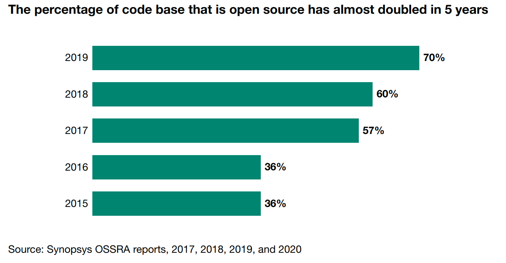
图2 开源代码占比统计
随着包含大量开源软件的应用被部署并暴露到网络中，如SolarWinds和Log4j等由上游供应链软件引入安全风险导致的攻击事件也频频出现在大众的视野里。如图3所示[3]，近10年来开源软件供应链攻击事件大体呈上升趋势。
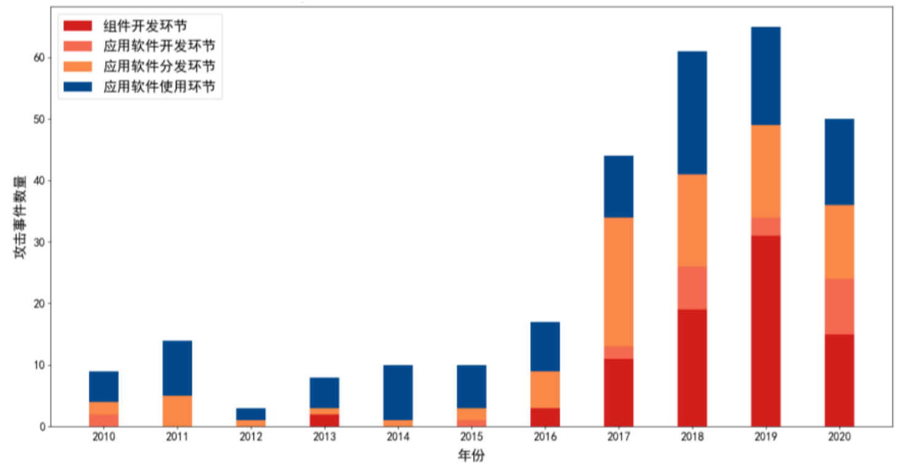
图3 开源软件供应链近十年的攻击事件趋势
综合来看，开源软件在整体产品中使用占比越来越高，开源软件对整体产品安全的影响也会越来越高。正如Endor Labs创始人前期所遇到的问题一样，SCA工具生成了海量的与 OSS 依赖关系相关的告警，然而除了开发人员手动进行代码审查之外，没有更好的方法可以验证这些报告的漏洞是否真实。同时随着国际贸易摩擦加重，全球化或逐步转向区域化保护，2022年初美国召开的开源软件安全会议也将开源软件提升至国家战略层面[4]。如何有效治理开源软件的引入的安全问题成了所有组织最为头痛的问题之一。
- 产品介绍
4.1 关于部署形态和执行效率
Endor Labs官网宣称其是一个基于云的服务，可以在几分钟内部署任何的客户环境中。产品的价值可在部署后数小时内得到证明。因此笔者猜测该产品可能是支持容器化部署，并且单产品的全量开源软件评估可能在10小时内，不会太快。
4.2 准确的软件材料清单（SBOM）
作为安全合规必不可少的物料之一，SBOM可以帮助企业全面了解其软件供应链中使用的开源和第三方组件，从而更好地管理与保护软件供应链的安全性。
Endor Labs支持通过静态代码分析和依赖关系分析结合生成软件供应链数据。如图4显示[5]，其提供一个集中化SBOM图形管理中心，支持创建、分析、存储和导出SBOM。
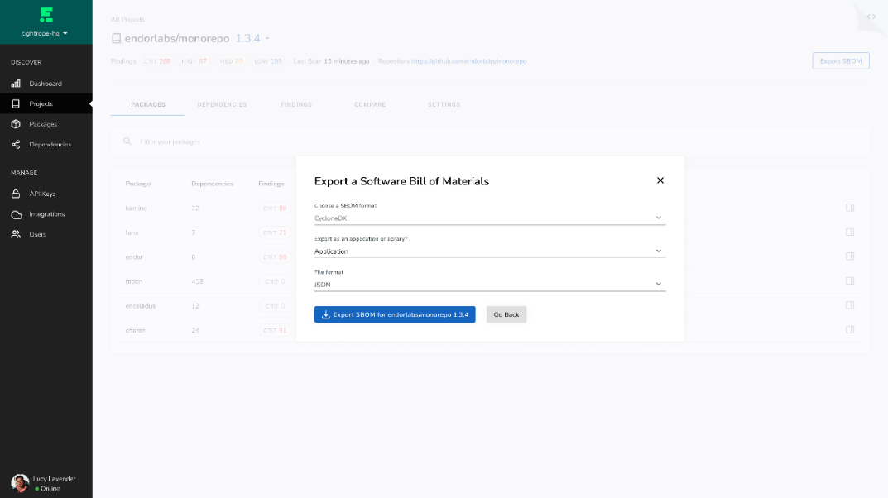
图4 SBOM导出
使用Endor Labs 生成 SBOM具有以下几个优势：
-
自动化生成：Endor Labs 采用自动化的方式生成 SBOM，能够大幅提高生成效率，降低人为失误风险。
-
完整性保障：Endor Labs 通过扫描整个软件供应链中的组件信息，确保 SBOM 的完整性和准确性。
-
实时更新：Endor Labs 的 SBOM 会随着软件供应链的变化而实时更新，确保 SBOM 始终保持最新状态。
-
易于管理：Endor Labs 生成的 SBOM 采用标准格式，可以方便地导入到其他工具中进行管理和分析。
-
支持多种格式：Endor Labs 支持生成多种格式的SBOM，如JSON、 SPDX 和 CycloneDX等，以满足不同用户的需求。
4.3可视化的依赖关系展示
Endor Labs 通过将软件供应链中的所有组件及其依赖关系存储在数据库中，并通过基于web的用户界面将其可视化展示。如图5所示 用户可以使用这个界面，快速浏览、分析和跟踪整个供应链软件成分。
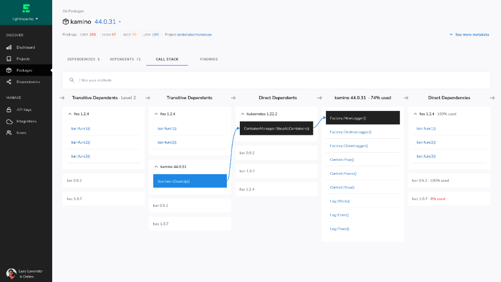
图5 依赖关系可视化
其可视化依赖关系将给开发人员和安全人员带来诸多好处，如：
-
缩短响应时间：通过展示易受攻击的软件包的使用位置，可视化展示可以帮助组织更快速地响应安全事件。
-
获取清晰的依赖项地图：通过可视化展示，组织可以更好地了解每个包的直接和传递依赖项，并且可以更轻松地识别依赖项之间的关系。
-
减少依赖关系总量：通过查找机会减少依赖关系总量，可视化展示可以帮助组织减少依赖项，从而降低复杂性和风险。
-
查找常用依赖项版本：通过查找组织中最常用的依赖项版本，可视化展示可以帮助组织更好地管理软件组件，并确保组件的版本控制。
4.4 多维度风险评分，治理开源软件
如图6 所示，Endor Labs使用多维风险评分机制来建立自动化审批和准入，实现了开源软件的治理。笔者分析，Endor Labs可能通过以下方式来实现开源软件的治理：
-
采集开源软件元数据：使用静态分析等综合技术来采集开源软件的元数据，包括版本号、许可证、依赖项、漏洞信息、受欢迎程度等。这些数据可以用于分析开源软件的风险程度。
-
多维风险评分：从多个维度（如安全评分、受欢迎程度、活动和质量等）根据算法对开源软件进行评分, 将评分结果可视化展示给用户，利用这些分数可以设置准入阈值，以帮助用户更好选择高质量的依赖项。
-
自动化审批：当企业员工使用开源软件时，通过预先设置的准入阈值，自动化审批来确保开源软件的合规性。如果某个软件的风险评分超过了预设的阈值，Endor Labs会阻止其被使用。
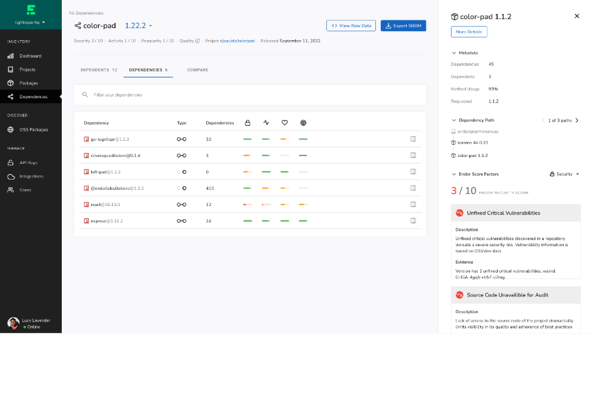
图6 开源软件治理
通过采用这些措施，Endor Labs可以帮助企业更好地管理开源软件，以提高开发速度并减少安全团队和开发团队之间的摩擦。
4.5 最优依赖关系选择
如图7和图8所示，依托于多维度的依赖项评分机制，Endor Labs还支持在IDE中为开发人员提供即时反馈，以便开发者在引入开源软件时就能做出最佳决策，最大限度地重用组织内的流行版本，降低风险和维护成本。
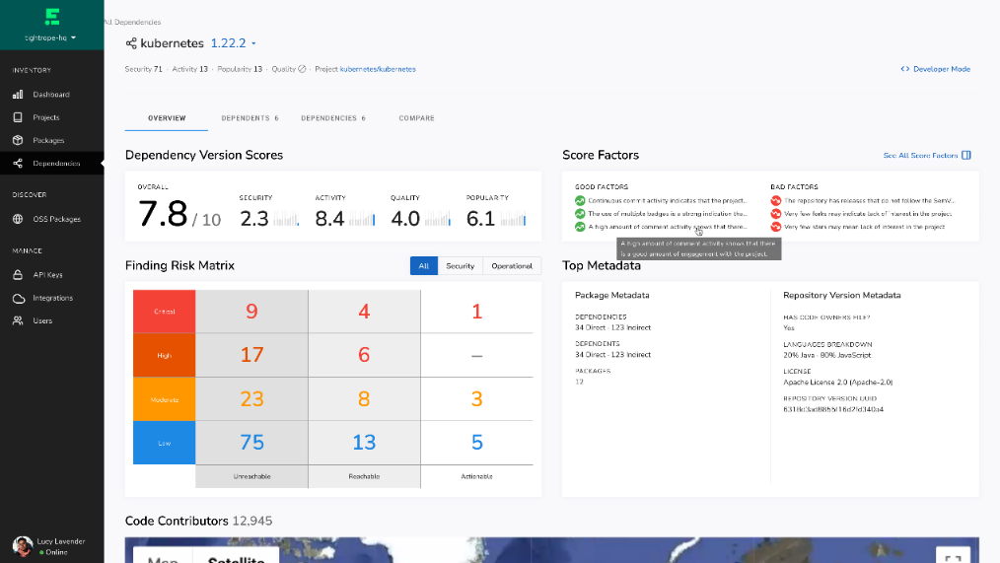
图7 依赖版本评分
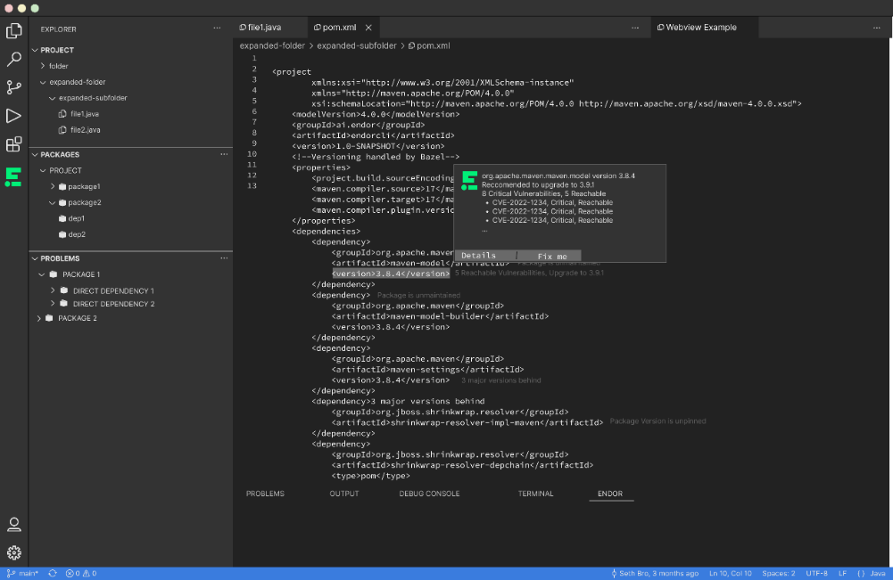
图8 Endor Labs支持IDE
4.6 减少噪音，确定漏洞优先级，
如图9所示，Endor Labs通过对开源软件安全危害和修复进行优先级评定，帮助开发团队和工程团队缩小安全修复范围(Endor Labs宣称可减少高达80%误报告警)，减少技术债务，专注于修复真正影响业务的漏洞。
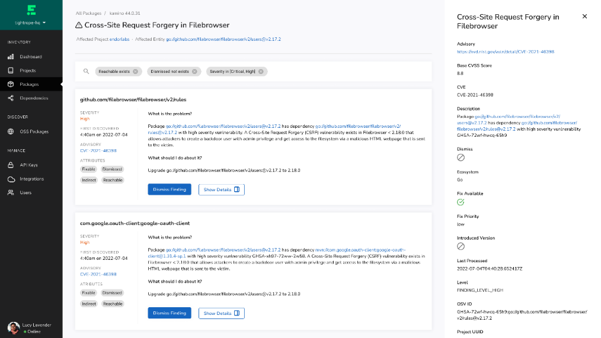
图9 软件风险优先级
笔者分析，其风险评定方式主要包含以下方式：
-
基于可达性的依赖关系分析：通过静态调用图在细粒度级别执行依赖关系分析，同时在内部使用动态调用图来形成基准，根据这些基准来衡量和优化调用图，结合两种分析技术，通过可达性分析算法计算每个依赖项的可达性程度。
-
基于机器学习技术来减少噪音：利用多种数据源，如CVE数据库、NVD数据库和开源代码库等，对软件漏洞和安全漏洞进行全面分析和跟踪。然后，利用自然语言处理技术和机器学习算法来对漏洞进行自动化分类和评估，以减少噪音和确定漏洞的优先级。
4.7 供应链攻击检测和响应
如图10所示，Endor Labs宣称其支持检测下一代攻击，例如域名仿冒和依赖混淆。监视已知漏洞行为。通过查明易受攻击的软件包的使用位置以及依赖于它的应用程序，快速响应问题。
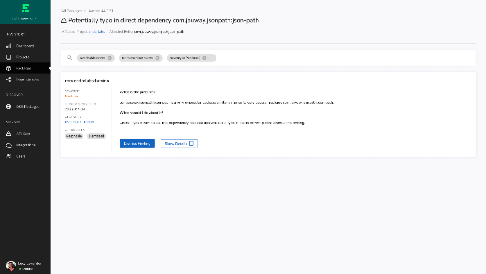
图10攻击检测
笔者分析，其检测和响应可能通过以下方式实现：
-
提供严格的开源软件准入规则：设置合理的评分阈值，使用可靠的源（trusted sources）来减少供应链攻击。
-
快速响应：基于多维度的安全评分和调用图，匹配攻击影响的对应漏洞，快速定位到调用位置，快速处置（如切断或替换等）。
-
持续监控：持续检测历史版本发现的新漏洞或则新版本变化可能带来的影响，对现有开源库进行更新。
4.8 开源软件库的维护
随着业务迭代或者开源工具的演进，部分开源软件可能不再被使用，或者历史引入的开源软件已经停止维护等等，正因为如此将给组织带来大量的被攻击风险。Endor Labs宣称支持通过以下方式对现有的开源软件进行持续维护，以规避以上问题。
- 减少依赖
删除未使用的依赖项可降低安全风险，还可以降低运营成本，并提高应用程序性能和构建时间。如图11所示，Endor Labs支持检测未使用的依赖项，以提醒开发团队将其删除。
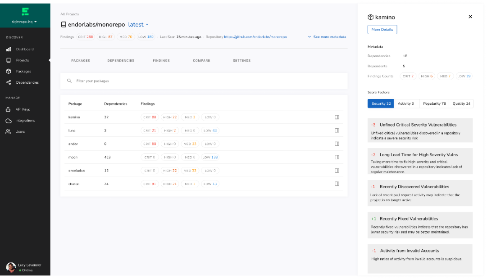
图11 开源软件依赖项检测
笔者分析，Endor Labs依赖项的处理大致包含以下几个方面：
-
识别并删除未使用的依赖项：通过可达性依赖分析技术，分析应用程序中未被使用的依赖项，从而帮助团队识别并删除不必要的依赖项，减少攻击面。
-
通过减少使用的依赖项数量来减少整体攻击面：通过优化依赖项的选择和使用，减少应用程序的依赖项数量，从而降低应用程序的整体攻击面。
-
在冗余依赖项上整合版本：通过分析应用程序中的依赖项，识别并整合重复的依赖项版本，从而减少应用程序的攻击面。
-
通过简化依赖项关系图缩短构建时间：通过优化依赖项的选择和使用，简化依赖项关系图，从而缩短构建时间，提高应用程序的开发效率。
- 未维护包检测
Endor Labs支持检测开源软件是否被继续维护。为用户是否应删除、内部维护或替换依赖项的决策提供数据支撑。如果使用长期未维护的开源软件或者对应版本，当有对应的漏洞产生时，将无法及时被修复，这将对产品造成巨大的安全隐患。
笔者分析，其检测手段可能包含以下内容:
-
监视开源软件社区：密切关注开源软件社区，了解开源软件的支持情况以及最新的安全修复。当一个软件项目被宣布不再维护时，在对应的软件信息进行标注。
-
分析依赖项版本：分析软件项目的依赖项版本，并对废弃的版本进行跟踪。当一个废弃版本出现安全漏洞时，在软件信息进行告警，降低评分。
4.9 基于ChatGPT的智能问答机器人-DroidGPT
Endor Labs结合ChatGPT推出了DroidGPT功能。如图12所示[6]，该功能支持针对开源软件安全问题进行交互式问答，获取即时的安全风险评估、漏洞分析和修复建议等信息。
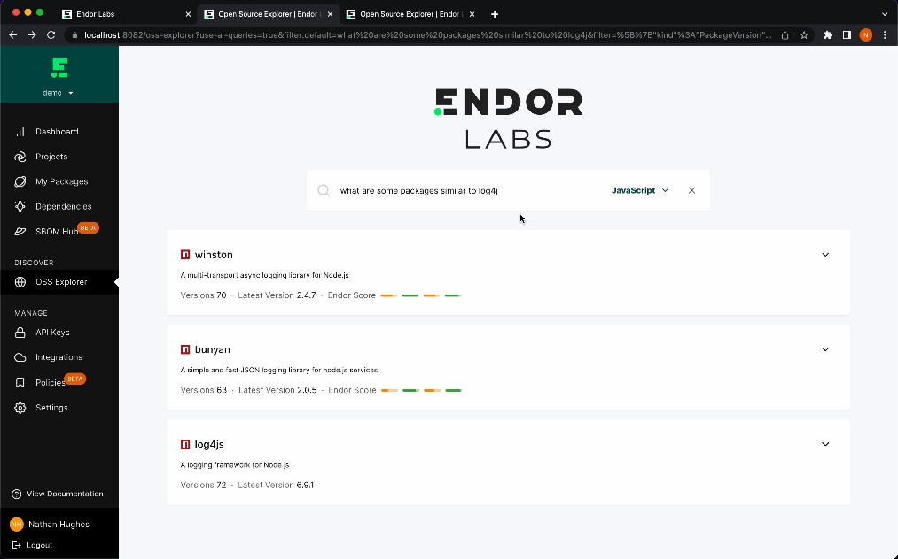
图12 DroidGPT使用展示
从仅有的官方视频来看，Endor Labs目前对ChatGPT的应用还比较单一，即作为智能问答机器人帮助使用者更快地获取所需的信息。从技术实现上来讲，目前的结合现状只需要将采集的元数据和漏洞等信息作为输入，利用ChatGPT的自然语言处理技术，结合可视化交互式界面即可快速的集成并达到效果。
5.0 产品对比
在产品功能上来讲软件组合分析（SCA）工具在很多时候也被用来管理OSS，那么Endor Labs和SCA有什么区别呢？
-
检测精度：Endor Labs采用了更先进的算法和机器学习模型，可以更准确地识别潜在的漏洞和安全风险。而传统SCA通常只能基于已知的漏洞数据库和规则来进行检测，可能会漏检一些新的或未知的漏洞。
-
可扩展性：Endor Labs可以轻松地适应大规模复杂软件供应链的检测需求，并提供了灵活的定制化配置选项。而传统SCA的覆盖范围和可扩展性可能会受到限制，难以应对复杂的供应链结构和高度定制化的软件组成。
-
可视性：Endor Labs提供了直观易用的用户界面，帮助用户更快速地发现和解决潜在的安全问题。同时，Endor Labs还提供了自动化的检测和报告功能，可以减少用户的手动工作量。而传统SCA通常需要用户自行解释和处理检测结果，并缺乏自动化的报告和协作功能。
-
响应能力：Endor Labs不仅能够帮助用户快速发现潜在的安全问题，还能够提供可操作的建议和响应方案，以便用户能够更快速地修复漏洞并降低安全风险。而传统SCA通常只能提供基础的漏洞信息和补丁推荐，需要用户自行研究和执行修复方案。
-
数据源多样性：Endor Labs可以整合多种数据源，包括公共漏洞数据库、开源软件组件信息、代码库信息、社交媒体信息等，从多个角度来分析潜在的安全风险。而传统SCA主要依赖公共漏洞数据库和组件信息来进行分析，缺乏多样性和深度。
综上所述，SCA主要原理是通过元数据扫描，并将扫描结果和已知的漏洞数据进行比对，以此评估开源软件的安全性。Endor Labs的方法比传统SCA更全面，包括从不同方面收集和分析数据，使用机器学习算法来减少噪音并提高准确性。此外，Endor Labs还提供了可达性依赖分析和供应链攻击检测和响应的功能，以及针对对应的风险提供更多的可操作建议来支持内部团队进行安全闭环，以帮助用户更好地管理和降低供应链攻击的风险。
- 总结
从技术上来看，Endor Labs主要应用了静态分析、动态分析、依赖分析、机器学习等技术来实现开源软件安全风险评估和漏洞管理的解决方案。随着AI和机器学习技术的发展，Endor Labs可能会进一步提升其机器学习算法的能力或者在更多场景结合ChatGPT技术（比如调用关系图和未知风险监测方面），以更准确地识别和管理安全威胁。此外，随着可信计算等新技术的发展，Endor Labs可能会进一步扩展其解决方案的能力和范围，以满足不断增长的安全需求。
从赛道上来看，随着开源软件在开发中的广泛应用，越来越多的公司依赖于开源组件来构建他们的应用。然而，这也意味着开源软件安全将变得更加重要。Endor Labs的技术着眼于解决这个问题，帮助企业降低开源软件的安全风险并确保其供应链的安全性。预计在未来，随着开源软件使用的继续增长，这个市场将会继续扩大，并且与之相关的供应链安全技术也将变得越来越重要。
参考文献
[1] Ron Harnik.Endor Labs Launches with $25M Seed Financing to Tackle Massive Sprawl of Open Source Software (OSS)
[2] Forrester.The State Of Application Security, 2021
[3] 中国科学院软件研究所.开源软件供应链安全研究综述
[4] the White House.Readout of White House Meeting on Software Security